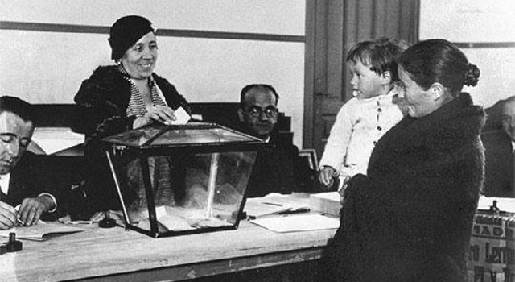

El papel de la mujer en la II República
Desde la Restauración, la mujer fue adquiriendo más protagonismo en la sociedad pero, al ser muy conservadora, éste protagonismo se ceñía casi exclusivamente al mundo familiar.
Su educación estaba baseada en la preparación para que en un futuro fueran tanto buena madre como fiel esposa.
Por otro lado, en el ámbito estudiantil femenino, había diferencias entre las niñas de clases acomodadas y las de clase baja. Por un lado las clases acomodadas recibían clases de piano, francés.. mientras que las clases bajas debían estudiar como administrarse, cocinar.. y si vivían en el mundo rural debían conocer las actividades agrícolas y trabajar en ellas.

Por otro lado la sociedad siempre permitió un avance de las mujeres siempre que este fuera un beneficio para el varón, pero poco a poco las cosas fueron cambiando
También había una gran diferencia en el ámbito laboral entre las propias mujeres ya que las clases obrera, solo trabajaban en el servicio doméstico o como modista, mientras que, la burguesía comenzó a colaborar en las empresas familiares y muchas de ellas estudiaban tanto bachillerato y muy pocas se atrevieron a ir a Universidad
Con el final de la I Guerra Mundial, el feminismo europeo entra en España, sobre todo el eco de que en el reino Unido en 1927 podían votar en igualdad de condiciones que el hombre.
Con la llegada de la II República, es cuando este cambio se hace más profundo; la Constitución del 31 en su artículo 36 extendió el voto a las mujeres en igualdad con los hombres.
Por tanto, con esta medida y otras que le acompañaron, el papel de la mujer dejó de ser un sujeto pasivo en la sociedad para tener voz propia y ser sujeto de su propio destino independiente de sus parientes masculinos.
Las nuevas leyes republicanas también fomentaron la incorporación de la mujer en la sociedad, se admitió el divorcio, se despenalizó el adulterio femenino, se normalizó el empleo de la mujer en la función pública, se admitió en las carreras de Registradores y Notarios y podían desempeñar la actividad de la abogacía en igualdad con los hombres y en cualquier otra actividad relacionada con la actividad pública, eso si, quedó relegada de las actividades militares.
El papel de la mujer en el franquismo
A partir de 1939, España retrocedió en todos los ámbitos.
La Segunda República favoreció un modelo de mujer moderna, donde el franquismo propugnó lo contrario.
Una gran parte de la población femenina se incorporó al ámbito laboral durante y tras la Guerra Civul, debido a las necesidades de las familias y porque mucha de la población masculina había fallecido.
Pero, pese a su presencia en éste ámbito, las mujeres obtenían un salario inferior y muchos de esos trabajos los tenían vedados por el simple echo de ser mujer.
Por otro lado, el sistema educativo instaurado durante el franquismo tuvo el objetivo de inculcar los modelos del franquismo.
Se trata de una educación separada y con conocimientos diferenciados.
La educación femenina se orientó a la preparación para la vida en el hogar, ser la perfecta esposa, dirigiéndola hacia la modestia, la obeciencia, el recato....
Así, en los centros de la Sección Femenina se impartía un plan de estudios compuesto por las siguientes materias:
- Formación Religiosa (Dogma, Moral, Liturgia)
- Formación Política (Historia de la Falange, Doctrina Política y Económica de la falange)
- Formación Doméstica (Pedagogía Familiar, Economía Doméstica, Cocina, Corte y Confección…)
- Música (Coros y Danzas) y Gimnasia.
Trás la implantación del franquismo se introduje una modelo de familia donde prevalecia la autoridad patriarcal.Este tipo de familia se organizaba jerárquicamente, el hombre era la autoridad indiscutible por ley natural y la situación de la mujer era dependencia/sometimiento.
El modelo de familia era simple y sencillo:
- El hombre trabajaba y llevaba dinero a casa
- La mujer limpiaba cuidaba a los hijos
Por otro lado, la familia se articulaba en torno al matrimonio católico, el divorcio fué prohibido y todas aquellas parejas que se diverciaran en la República, volvieron a estar casadas
Aún así el modelo de mujer fué evolucionando pasito a pasito, a mediados de los 50 coincidiendo con el desarrollo económico
, esa estructura social impuesta en los primeros años del franquismo empezó a cambiar levemente, mediante diversas iniciativas y decretos.